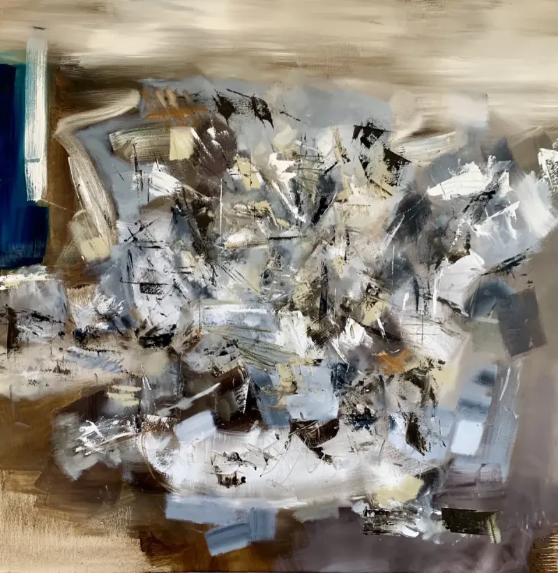

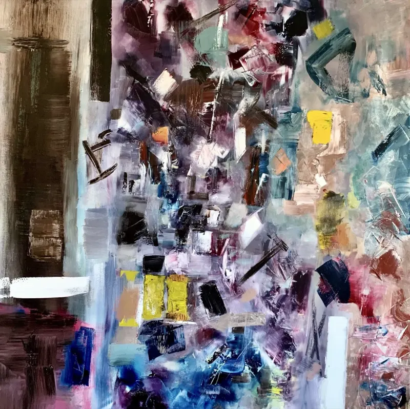

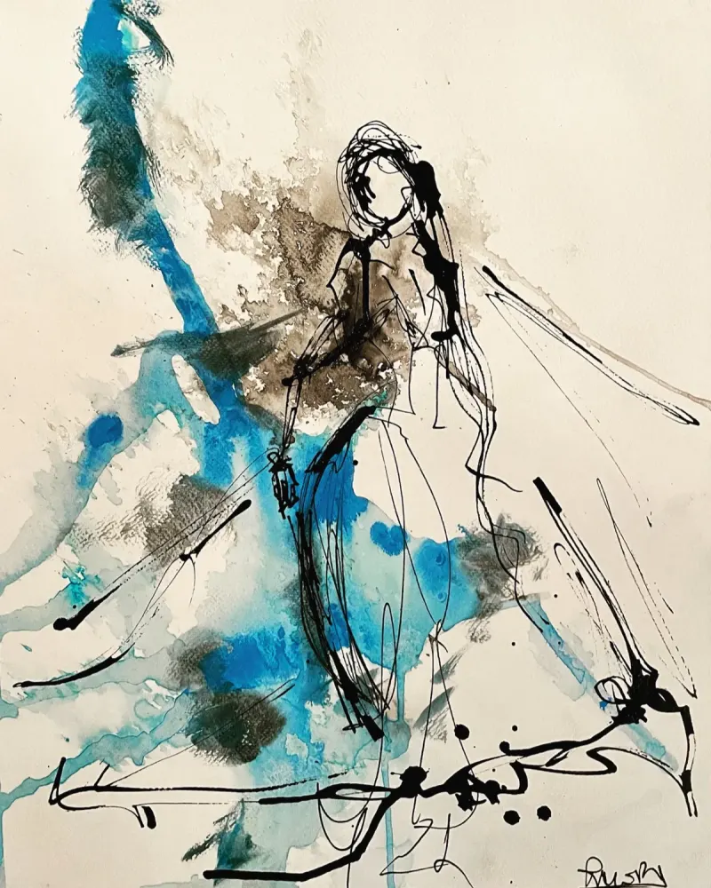

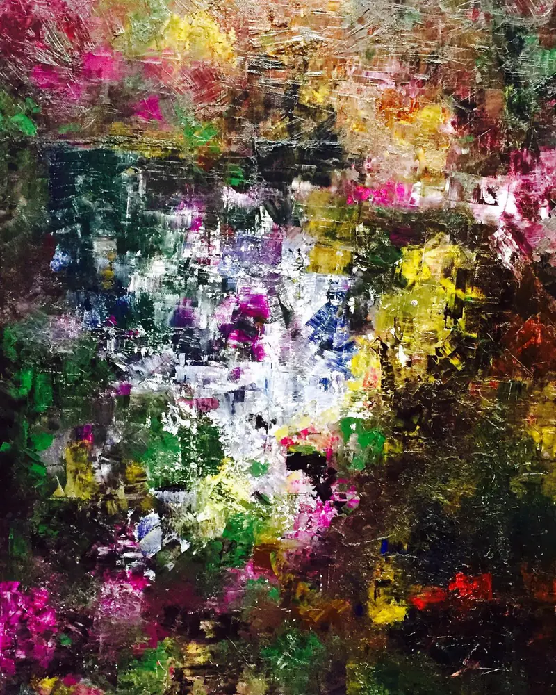

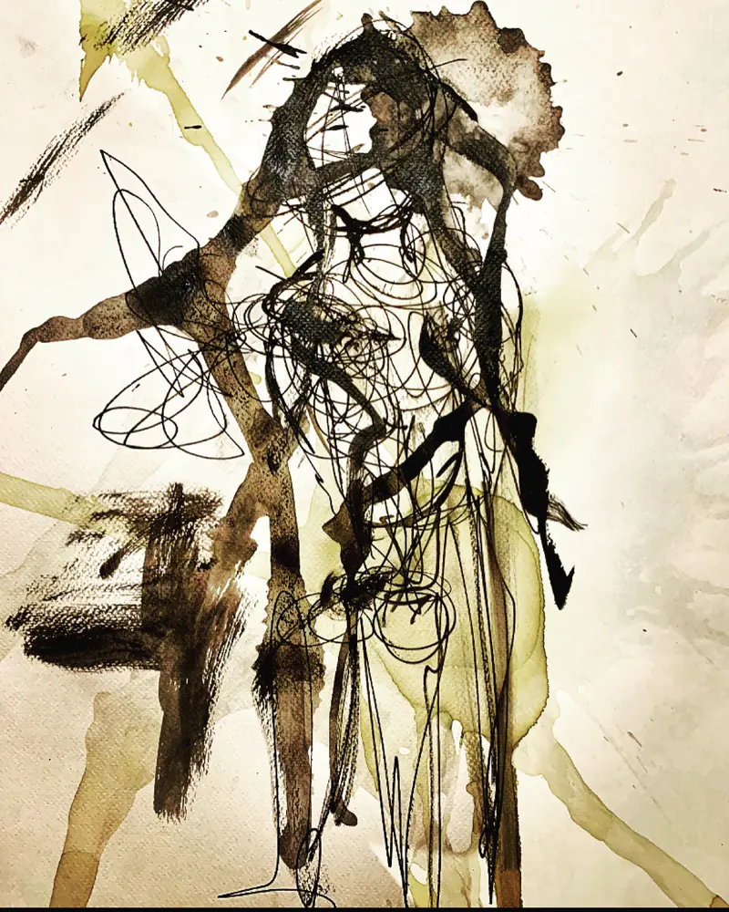
La matière, le trait, le silence.
Explorer les 55 œuvresTout commence
par un geste.
La peinture, c’est quelque chose qui ne ment jamais.
L’encre se pose. La figure apparaît.
Entrer dans les carnets ↗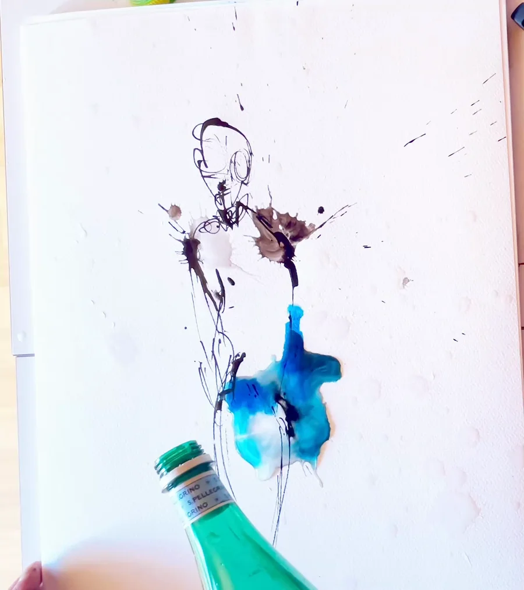
Vu du dessus, une figure au trait, puis des encres bleues et violettes qui se diffusent sur le papier. Film sans son.
Rien ne
disparaît vraiment.
Des carnets ouverts, des lieux traversés,
des morceaux de vie.

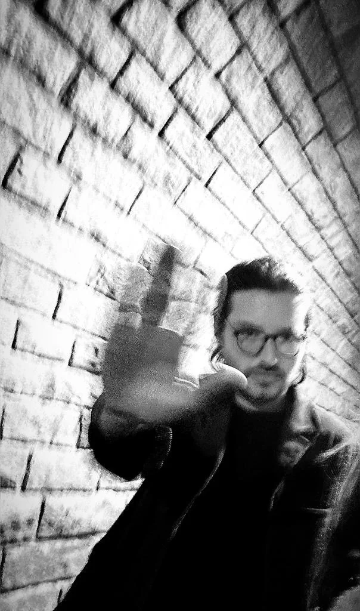

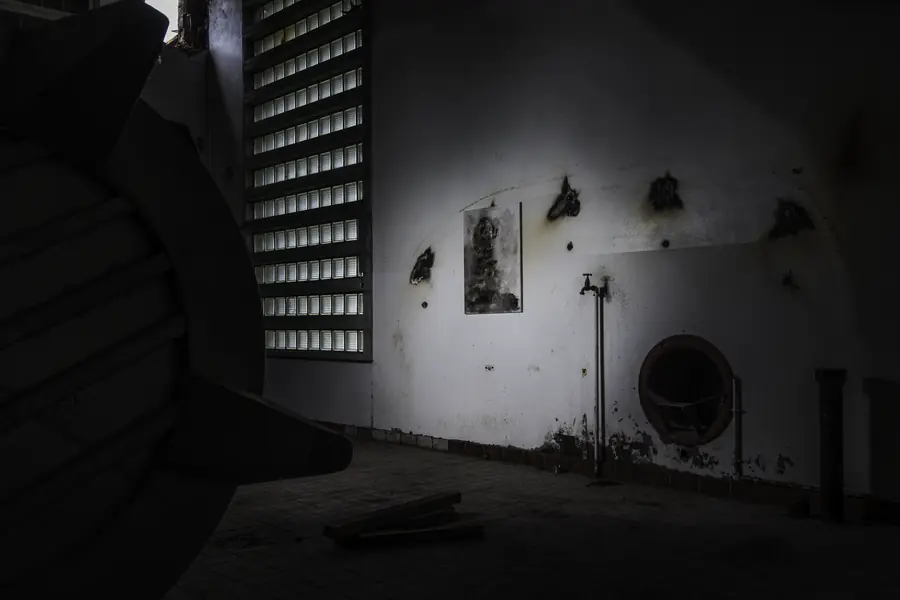

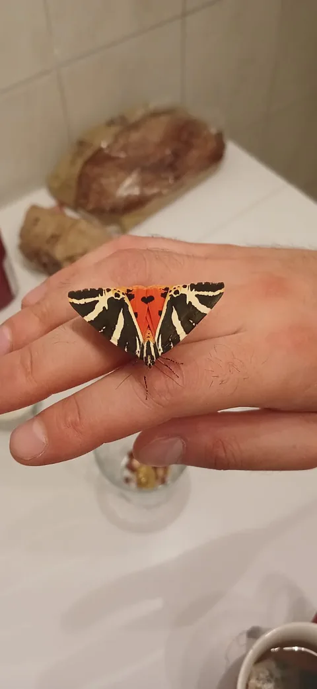

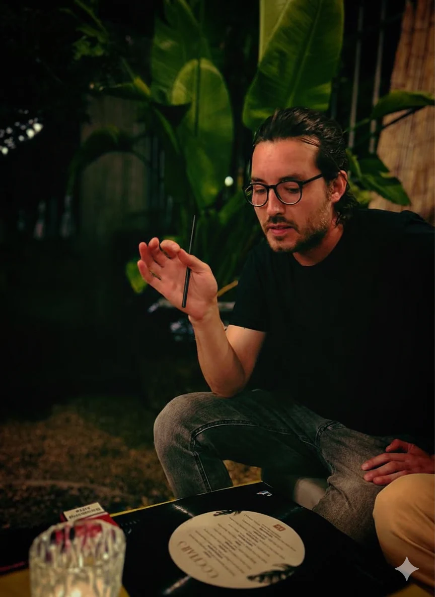

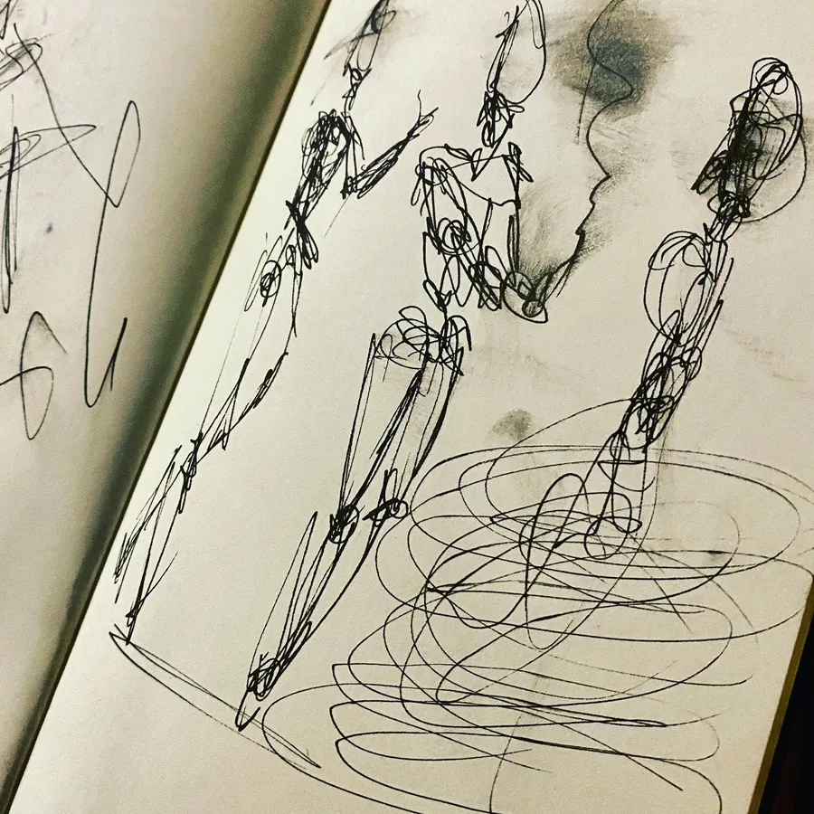

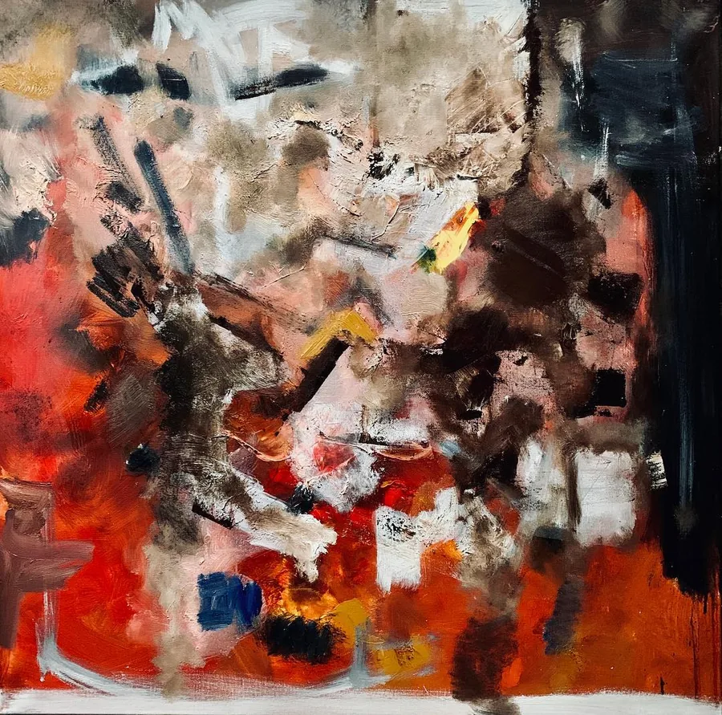
Rien n’oblige
à commencer par le début.
La mémoire reste entière.
114 fragments, autant de chemins.

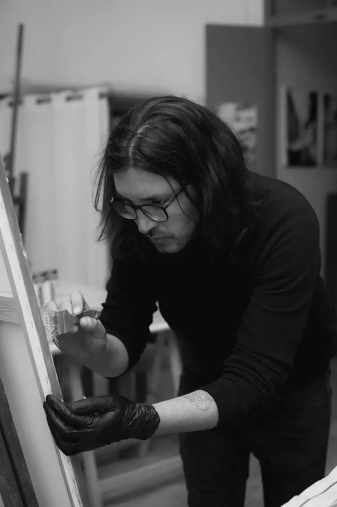
Camilo Rivera · BramoisPeindre.
Tracer.
Construire.
Né au Chili. Grandi en Valais.
Et toujours, ce besoin de créer.
Je peins depuis une dizaine d’années. L’huile d’abord : la matière, le geste, l’abstraction. Puis l’encre de Chine, et avec elle la figure. Un trait plus nu, plus direct.
Ce même élan me conduit à imaginer des sites et des applications chez OSOM Labs, l’agence que j’ai fondée à Bramois. De la toile au code, partir de rien et construire quelque chose qui tient.
L’autre côté du geste : OSOM Labs Entrer dans l’atelier ↗Toujours
en devenir.
Camilo Rivera
Artiste peintre · Bramois, Valais